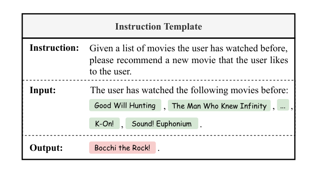
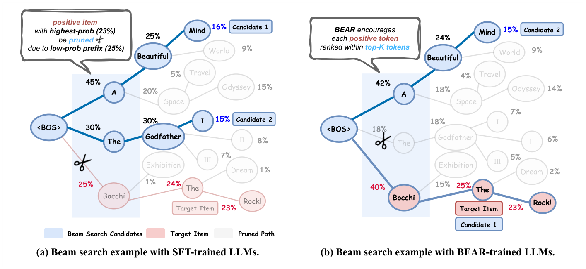
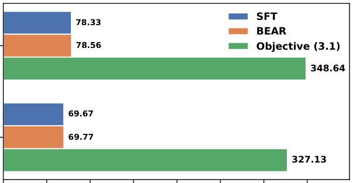
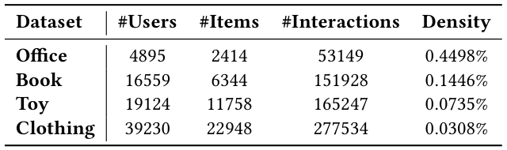
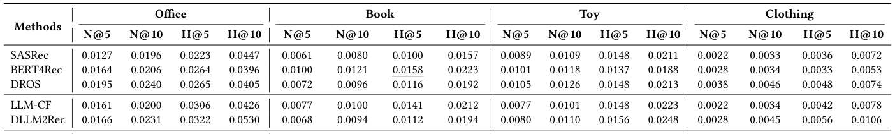
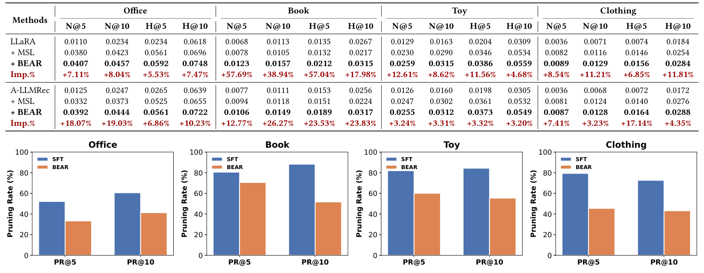
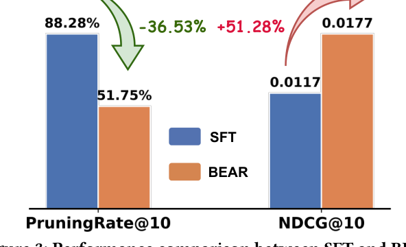
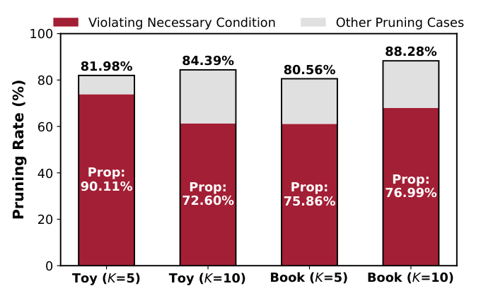

BEAR: Towards Beam-Search-Aware Optimization for Recommendation with Large Language Models (面向大语言模型推荐的束搜索感知优化)
- 会议/期刊: SIGIR 2026 (第 49 届国际 ACM SIGIR 会议，Melbourne, VIC, Australia)
- 推荐链路定位: 端到端生成式 (End-to-End Generative) — 生成式检索 (Generative Retrieval) 的微调目标设计
- 研究方向: 大语言模型推荐 (LLM4Rec) / 生成式推荐与离散语义 ID
- 论文原文: https://arxiv.org/abs/2601.22925v3
- 开源代码: https://github.com/Tiny-Snow/BEAR-SIGIR-2026
TL;DR (核心速览)
本文针对 LLM 生成式推荐中 SFT 训练目标（最大化正样本整体概率）与束搜索解码（贪心前缀剪枝）之间的训练-推理不一致：即便正样本整体概率最高，其低概率前缀也会在束搜索早期被剪掉（实测 80%+ 高概率正样本被误剪）。作者提出 BEAR 正则，将"每个正样本 token 须排在前 \(B\) 名"这一束搜索保留的必要条件松弛为可微 sigmoid 代理损失，无需模拟束搜索即可训练。在 4 个 Amazon 数据集、BIGRec 骨干上平均提升 12.50%（NDCG@K / HitRatio@K），训练开销与 SFT 相当。
Background & Motivation (背景与动机)
- 领域背景与主流范式: LLM-based RS 将推荐重构为自然语言生成任务，三阶段流程为：(i) 将用户历史交互序列转为结构化 prompt；(ii) 以 prompt-正样本对做监督微调 (SFT)；(iii) 推理时用束搜索 (Beam Search) 高效检索 \(B\) 个候选、取 top-\(K\) 作为推荐。代表工作包括 BIGRec、LLaRA、A-LLMRec 等骨干，以及 D³、CFT、D²LR、IGD、MSL 等 SFT 改进与 S-DPO、RosePO、SPRec 等 DPO 类方法。
- 现有方法局限 (Limitations of Prior Work):
- SFT 只优化整体概率 \(P_\theta(y|x)=\prod_t P_\theta(y_t|y_{<t},x)\)，对前缀局部概率无约束；
- 束搜索是局部贪心：每步仅保留前缀概率 top-\(B\) 的候选，低概率前缀即使能导向整体概率最高的完整物品也会被提前剪枝；
- 现有 DPO 类方法建模成对偏好，同样未考虑解码阶段的剪枝动力学。
- 核心挑战 (Key Challenge): 为什么不能直接优化"束搜索保留"目标？作者给出直接方案（目标 3.1）：要求正样本每个前缀 \(y_{<t}\) 的概率不低于第 \(B\) 名候选前缀概率 \(P_\theta(b^B_{<t}|x)\)。但计算该阈值需在训练中对每个样本完整模拟束搜索，需至多 \(B\) 倍额外前向、且严格串行不可并行，实测运行时间为 SFT 的 4.45 倍以上（图 5：Book 上 327.13s vs 69.67s/epoch），不可行。
- 核心洞察与切入点 (Key Insight): 作者做了两项关键实证观察：
- 观察 1（图 3/图 6）：在整体概率 top-\(K\) 的正样本中，80% 以上（Book 88.28%、Toy 84.39%）在束搜索中被误剪，证明训练-推理不一致是主要瓶颈；
- 观察 2（图 4）：所有误剪案例中，70% 以上（Prop: 72.60%~90.11%）源于违反一个必要条件——某个正样本 token 的 token 级概率未进入 top-\(B\)。
因此，只需优化这个"token 级 top-\(B\)"必要条件，即可覆盖绝大多数误剪，且该阈值可直接从 SFT 已有的 logits 经 softmax 得到，零额外前向。
Problem Formulation & Method (问题定义与方法架构)
1. 符号定义与输入表征 (Notations & Input Representations)
- 用户集 \(\mathcal{U}\)、物品集 \(\mathcal{I}\)；用户 \(u\) 的历史交互序列 \(H_u=[h_1,h_2,\cdots,h_{N-1}]\)，\(h_n\in\mathcal{I}\)；目标为预测下一物品 \(h_N\)。
- 通过指令模板（图 2）将 \(H_u\) 转为 prompt \(x\)，每个物品用其文本描述（标题/元数据）表示；正样本 \(y\) 为预测物品的文本描述，\(|y|\) 为其 token 长度，\(y_t\) 为第 \(t\) 个 token，\(y_{<t}\) 为前缀。
- 模型输出为 token 级条件概率 \(P_\theta(y_t|y_{<t},x)\)，整体概率按链式法则分解为 \(\prod_{t=1}^{|y|}P_\theta(y_t|y_{<t},x)\)。
- 束宽 \(B\)（推理时 \(B=10\)），推荐数 \(K\in\{5,10\}\)。

2. 整体流水线 (Overall Architecture)
数据流：用户历史序列 \(\to\) 指令模板构造 prompt \(x\) \(\to\) LLM（Llama-3.2-3B + LoRA）前向得到各步 logits \(\to\) 同时计算 SFT 交叉熵损失与 BEAR 正则（基于同一次前向的 logits 计算 token 级 top-\(B\) 阈值）\(\to\) 联合反向传播 \(\to\) 推理时约束束搜索（\(B=10\)）生成候选物品。
flowchart TD
A["输入层: 用户历史序列 H_u 经指令模板转为 prompt x"] --> B["LLM 前向 (Llama-3.2-3B + LoRA rank=8)"]
B --> C1["SFT 损失: 正样本 token 级交叉熵"]
B --> C2["BEAR 正则: 由同一次前向 logits 计算 token 级 top-B 阈值 beta_t^B, 构造剪枝边际 Delta_t^B 的 sigmoid 代理"]
C1 --> D["联合损失 L_BEAR = L_SFT + lambda * L_reg"]
C2 --> D
D --> E["推理: 约束束搜索 (B=10) 生成候选, 取 top-K"]3. 核心模块设计与数学原理 (Key Designs & Formulations)
(1) 直接方案：束搜索保留目标（目标 3.1，不可行基线）
要求正样本每个前缀在每步都排在前 \(B\)：
其中 \(b^B_{<t}\) 为第 \(t-1\) 步排名恰为第 \(B\) 的候选前缀，右项即"保留阈值"。该目标需在训练中模拟束搜索，计算不可行（见上文 4.45× 开销）。
(2) BEAR 核心：token 级必要条件（目标 3.2）
将前缀级约束松弛为 token 级约束——每个正样本 token 的 token 级概率须排在前 \(B\)：
物理直觉：若某 token 未进 top-\(B\)，则从该前缀扩展出的所有候选在下一步必然被剪（因为束搜索只保留 top-\(B\) 扩展候选），故这是束搜索存活的必要条件。虽比 (3.1) 弱，但图 4 证明它覆盖 70%+ 误剪案例，是"足够强且计算高效"的代理。关键：\(\beta^B_t\) 只需对 SFT 已算出的 logits 做 softmax 排序即可获得，无需额外前向。
(3) 可微松弛：剪枝边际与 sigmoid 代理（式 3.3–3.4）
定义剪枝边际 \(\Delta^B_t=\log\beta^B_t-\log P_\theta(y_t|y_{<t},x)\)，\(\Delta^B_t>0\) 表示 token 概率低于 top-\(B\) 阈值、将被立即剪枝。用温度 \(\xi\) 的 sigmoid 平滑指示函数：
当 \(\xi\to 0\) 时 \(\sigma_\xi\) 收敛于 \(\mathbb{I}(\Delta>0)\)。最小化 \(\mathcal{L}_{reg}\) 即压缩每个 token 的剪枝边际，降低误剪风险。与 SFT 的区别：SFT 对所有 token 一视同仁地抬升概率，BEAR 则动态地将正样本 token 概率与其各自的 top-\(B\) 阈值比较，显式对齐解码动力学。
4. 训练目标、负采样与推理复杂度 (Optimization, Negative Sampling & Complexity)
- 总损失: $\(\min_\theta\ \mathcal{L}_{BEAR}(x,y;\theta)=\mathcal{L}_{SFT}(x,y;\theta)+\lambda\mathcal{L}_{reg}(x,y;\theta)\)$ 其中 \(\mathcal{L}_{SFT}=-\sum_t\log P_\theta(y_t|y_{<t},x)\)，\(\lambda>0\) 控制正则强度，\(\xi\) 控制 sigmoid 平滑度。超参搜索范围 \(\lambda\in[0.1,5.0]\)、\(\xi\in[0.25,3.0]\)。
- 负采样策略: 主实验为免负采样（纯正样本 SFT + BEAR 正则）。扩展实验中，将 BEAR 接入 S-DPO 时，对正样本施加 \(+\mathcal{L}_{reg}\)、对采样负样本施加 \(-\mathcal{L}_{reg}\)（鼓励保留正样本、剪掉负样本）。
- 复杂度: BEAR 复用 SFT 同一次前向的 logits，仅增加 softmax 排序求 top-\(B\) 阈值的开销，无额外前向。实测训练时间与 SFT 相当（Book: 69.77s vs 69.67s/epoch；Toy: 78.56s vs 78.33s/epoch），而直接优化目标 (3.1) 为 327.13s / 348.64s（约 4.45×+）。对比 CFT、S-DPO、SPRec 等需额外前向的方法，BEAR 开销约为其 1/2~1/10。推理阶段为标准约束束搜索（\(B=10\)），与基线一致。


Experimental Setup & Evaluation Protocol (实验设置与评估协议)
- 数据集统计与预处理: 4 个 Amazon 数据集（Office、Book、Toy、Clothing），采用标准 5-core 过滤（用户与物品交互数 < 5 被剔除），滑动窗口大小 11 切分序列。

| 数据集 (Dataset) | 用户数 (#Users) | 物品数 (#Items) | 交互数 (#Interactions) | 稀疏度/密度 (Density) | 模态/辅助特征说明 |
|---|---|---|---|---|---|
| Office | 4,895 | 2,414 | 53,149 | 0.4498% | 物品文本描述（标题/元数据） |
| Book | 16,559 | 6,344 | 151,928 | 0.1446% | 同上 |
| Toy | 19,124 | 11,758 | 165,247 | 0.0735% | 同上 |
| Clothing | 39,230 | 22,948 | 277,534 | 0.0308% | 同上 |
- 数据划分方式 (Splitting Strategy): 按时间顺序以 8:1:1 比例划分为训练/验证/测试集（chronological order ratio split），验证集上以最佳 NDCG@10 选择 checkpoint。属时间序切分，未来信息泄露风险较低。
- 排名评测协议 (Ranking Protocol): 采用约束束搜索（constrained beam search，\(B=10\)）生成候选，确保生成物品合法、无幻觉；在生成候选集上计算 top-\(K\) 指标。原文未明确报告是否对全库未交互物品做 Full-Ranking，评测基于束搜索候选集，属生成式候选集排序协议（非全库排序、非负采样排序）。
- 评价指标与显著性检验: NDCG@\(K\) 与 HitRatio@\(K\)，\(K\in\{5,10\}\)。骨干为 Llama-3.2-3B（另测 1B、8B），LoRA rank=8、学习率 1e-4、AdamW、10 epochs、batch size 128（DPO 类为 64），8×RTX 5090。原文未报告多随机种子方差与配对显著性检验（如 \(p<0.05\)），此为评估严谨性上的一个缺口。
Key Experimental Results (核心实验结果)
1. 主实验对比 (Main Results)
以 BIGRec 为骨干，BEAR 在全部 4 数据集、全部 16 个指标上均最优，相对最佳基线（多为 MSL 或 RosePO）平均提升 +12.50%。摘录关键结果：

| 数据集 | 指标 | 传统/LLM增强基线 (SASRec/BERT4Rec/DLLM2Rec) | 最强 SFT/DPO 基线 (MSL/RosePO) | 本文方法 (BEAR) | 相对提升 (Improv.) |
|---|---|---|---|---|---|
| Office | N@5 / N@10 | 0.0195 (DROS) / 0.0240 | 0.0346 (MSL) / 0.0388 | 0.0365 / 0.0421 | +5.49% / +8.51% |
| Office | H@5 / H@10 | 0.0322 (DLLM2Rec) / 0.0660 (RosePO) | 0.0504 (MSL) / 0.0660 (RosePO) | 0.0545 / 0.0717 | +8.13% / +8.64% |
| Book | N@5 / N@10 | 0.0100 (BERT4Rec) / 0.0121 | 0.0117 (RosePO) / 0.0127 (RosePO) | 0.0146 / 0.0177 | +24.79% / +39.37% |
| Book | H@5 / H@10 | 0.0158 (BERT4Rec) / 0.0244 (SPRec) | 0.0153 (RosePO) / 0.0244 (SPRec) | 0.0203 / 0.0297 | +28.48% / +21.72% |
| Toy | N@5 / N@10 | 0.0122 (BIGRec) / 0.0157 | 0.0239 (MSL) / 0.0301 (MSL) | 0.0254 / 0.0316 | +6.28% / +4.98% |
| Toy | H@5 / H@10 | 0.0200 (BIGRec) / 0.0307 | 0.0359 (MSL) / 0.0551 (MSL) | 0.0380 / 0.0574 | +5.85% / +4.17% |
| Clothing | N@5 / N@10 | 0.0043 (BIGRec) / 0.0071 | 0.0075 (MSL) / 0.0115 (MSL) | 0.0082 / 0.0127 | +9.33% / +10.43% |
| Clothing | H@5 / H@10 | 0.0086 (BIGRec) / 0.0172 | 0.0136 (MSL) / 0.0260 (MSL) | 0.0148 / 0.0290 | +7.25% / +6.62% |
跨骨干泛化（表 3）：在 LLaRA 与 A-LLMRec 骨干上，BEAR 相对 MSL 均一致提升，最大提升出现在 Book 数据集（LLaRA 上 N@5 +57.69%、H@5 +57.04%；A-LLMRec 上 N@10 +26.27%、H@10 +23.83%）。

跨 LLM 规模泛化（表 4）：Llama-3.2-1B 与 Llama-3-8B 上 BEAR 均优于 MSL，如 8B 上 Book 的 H@5 提升 +51.48%、H@10 +36.92%。
2. 消融实验与控制变量分析 (Ablation Study)
- 直接目标 (3.1) vs BEAR（表 5）：在 2K 采样用户的 Toy-S / Book-S 小规模数据上，目标 (3.1) 略优于 BEAR（Toy-S NDCG@10: 0.0103 vs 0.0094；Book-S: 0.0077 vs 0.0072），但计算代价高 4.45×+，BEAR 以极小性能折损换取可落地性——这是本文最核心的"效率-效果"权衡证据。
- 误剪率消融（图 6）：BEAR 相比 SFT 将 PruningRate@\(K\) 平均降低 -24.86%，直接验证正则确实对齐了解码行为（Book 上 PR@10 从 SFT 的 88.28% 显著下降，图 3 显示 -36.53% 的剪枝率变化与 +51.28% 的性能变化）。
- 与 DPO 目标结合（图 7）：在 S-DPO 上叠加正/负 BEAR 正则后，所有数据集 NDCG@10 / HR@10 均显著提升，验证其作为"通用微调目标插件"的兼容性。
- 注：原文未做"参数量对齐"或"图拓扑度数匹配"类控制变量消融（本文非图模型，不适用）。


3. 稀疏度/冷启动分桶与超参敏感度 (Sparsity Buckets & Hyperparameters)
- 稀疏度维度: 四个数据集密度跨度从 0.4498%（Office）到 0.0308%（Clothing），BEAR 在最稀疏的 Clothing 上仍获 +6.62%~+10.43% 提升，说明方法对稀疏场景稳健；但原文未做用户/物品交互频次分桶的长尾分析。
- 超参敏感度（图 8）: \(\lambda\) 与 \(\xi\) 均呈明显峰值。\(\lambda\) 过小退化为 SFT（训练-推理不一致未解），过大则过度强调正则、牺牲整体概率；\(\xi\) 过小导致 sigmoid 过锐、梯度饱和，过大则过度平滑、稀释正则信号。在合理范围内性能相对稳健。
- 线上 A/B 测试: 原文仅包含离线实验，未报告任何线上 A/B 结果。
Highlights, Limitations & Critiques (亮点、局限与审稿级批判)
- 核心亮点与可迁移性:
- 问题识别精准：将"训练-推理不一致"这一 NLP 生成式检索中的经典问题首次系统引入 LLM-based RS，并用 80%+ 误剪率、70%+ 必要条件违反率两组实证数据锚定瓶颈，动机链条完整。
- 必要条件代理设计优雅：用 token 级 top-\(B\) 约束替代前缀级束搜索模拟，复用 SFT 已有 logits，实现"零额外前向"的束搜索感知训练，工程可落地性极强。
- 模型无关性：作为正则项可无缝插入 SFT（BIGRec/LLaRA/A-LLMRec）、不同 LLM 规模（1B/3B/8B）乃至 DPO 目标（S-DPO），泛化验证充分。
- 局限性与审稿视角批判 (Critical Limitations):
- 评估协议偏弱：仅报告 NDCG@K / HitRatio@K，未做全库 Full-Ranking，也未报告多随机种子方差与配对显著性检验（\(p<0.05\)），"平均 +12.50%"的统计可信度缺乏支撑；Book 上 +39.37% 的异常高提升可能受候选集规模与数据特性影响，需谨慎解读。
- 必要条件非充分条件：BEAR 仅覆盖 70%+ 误剪，剩余约 30% 误剪（前缀级问题）未被处理；表 5 显示直接目标 (3.1) 仍优于 BEAR，说明存在可挖掘的性能上限。
- 超参依赖：\(\lambda\) 与 \(\xi\) 均需逐数据集调优且呈峰值，跨域迁移时调参成本不可忽视。
- 推理侧未优化：方法只改训练目标，推理仍为标准束搜索，未探索与多 token 预测、多样化束搜索等推理技术的结合（作者列为未来工作）。
- 缺少线上验证与延迟报告：无工业 A/B、无单请求推理延迟 (ms/request) 与峰值显存数据，工业落地价值有待补强。
Rating (四维评分)
- 方法创新性 (Novelty): ⭐⭐⭐⭐ （问题视角新颖、代理设计巧妙，但核心思想在生成式检索领域已有 OTM/RIPOR 等先例，属跨域迁移式创新）
- 评估协议与实验扎实度 (Protocol & Experiments): ⭐⭐⭐ （数据集与基线覆盖充分、跨骨干/规模/目标泛化完整，但缺显著性检验、全库排序与线上验证）
- 写作与数学规范度 (Clarity & Rigor): ⭐⭐⭐⭐ （问题形式化清晰、目标 3.1→3.2→3.4 的推导链条严谨，图示直观）
- 工业落地与复现价值 (Industrial & Practical Value): ⭐⭐⭐⭐⭐ （零额外前向、与 SFT 同量级开销、模型无关可插拔，代码已开源，落地门槛极低）